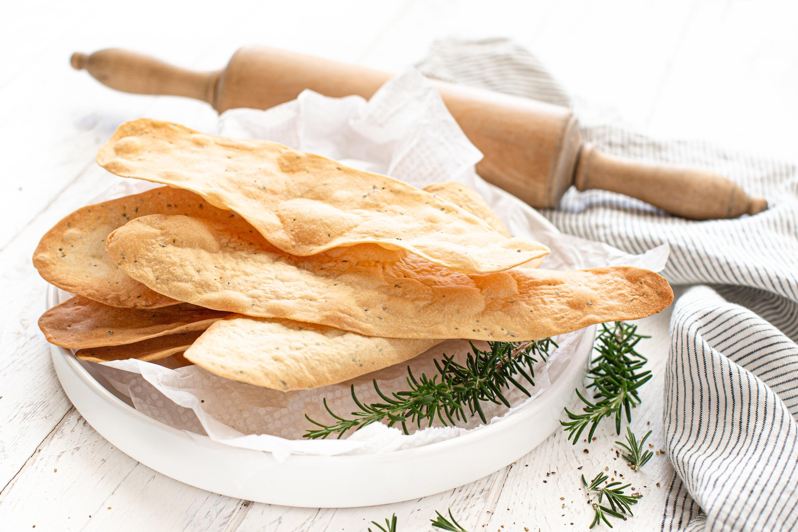

LAVOSH

Good with soup, as an appetizer or as a snack. Lavosh is an Armenian unleavened flat bread.
Prep Time: 15 mins
Cook Time: 1 hrs
Total Time: 1 hrs 15 mins
Servings: 10
Yield: 10 loaves
Ingredients:
- 2 ½ cups all-purpose flour
- 1 teaspoon white sugar
- 1 teaspoon salt
- ⅔ cup water
- 1 egg white
- 2 tablespoons butter, melted
- 2 egg whites, beaten
- 2 tablespoons sesame seeds
Directions:
- Preheat oven to 400 degrees F (200 degrees C).
- In a large bowl, stir together, flour, sugar and salt.
Add water, 1 egg white and melted butter; mix well to make a stiff dough. Knead until dough is smooth, about 5 minutes.
- Divide dough into 10 balls. Roll each ball on lightly floured surface until paper thin. Place on ungreased baking sheet.
Brush with egg white and sprinkle with sesame seeds.
- Bake in preheated oven for 10 to 12 minutes, until browned.